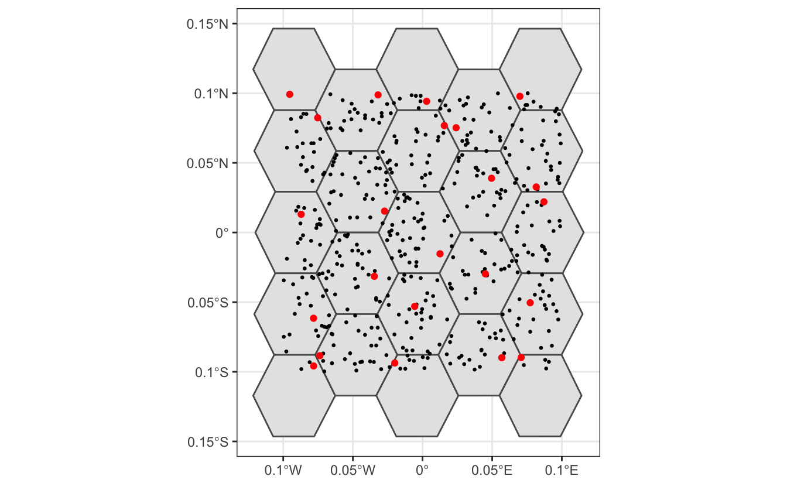

Lesson 7 Spatiotemporal Subsampling
Despite the strengths of eBird data, species observations collected through citizen science projects present a number of challenges that are not found in conventional scientific data. In this chapter, we’ll discuss three of these challenges: spatial bias, temporal bias, and class imbalance. Spatial and temporal bias refers to the tendency of eBird checklists to be distributed non-randomly in space and time, while class imbalance refers to fact that there will be many more non-detections than detections for most species. All three can impact our ability to make reliable inferences from eBird data.
Exercise
Think of some examples of birder behavior that can lead to spatial and temporal bias.
- Spatial bias: most eBirders sample near their homes, in easily accessible areas such as roadsides, or in areas and habitats of known high biodiversity.
- Temporal bias: eBirders preferentially sample when they are available, such as weekends, and at times of year when they expect to observe more birds, such as spring migration in North America.
Fortunately, all three of these challenges can largely be addressed by spatiotemporal subsampling of the eBird data prior to modeling. In particular, this consists of dividing space and time up into a regular grid (e.g. 5 km x 5 km x 1 week), and only selecting a subset of checklists from each grid cell. To deal with class imbalance, we can subsample detections and non-detections separately to ensure we don’t lose too many detections.
For the spatial part of the subsampling we’ll use the package dggridR to generate a regular hexagonal grid and assign points to the cells of this grid. Hexagonal grids are preferable to square grids because they exhibit significantly less spatial distortion.
7.1 A toy example
To illustrate how spatial sampling on a hexagonal grid works, let’s start with a simpe toy example. We’ll generate 500 randomly placed points, construct a hexagonal grid with 5 km spacing, assign each point to a grid cell, then select a single point within each cell.
library(auk)
library(sf)
library(dggridR)
library(lubridate)
library(tidyverse)
# bounding box to generate points from
bb <- st_bbox(c(xmin = -0.1, xmax = 0.1, ymin = -0.1, ymax = 0.1),
crs = 4326) %>%
st_as_sfc() %>%
st_sf()
# random points
pts <- st_sample(bb, 500) %>%
st_sf(as.data.frame(st_coordinates(.)), geometry = .) %>%
rename(lat = Y, lon = X)
# contruct a hexagonal grid with ~ 5 km between cells
dggs <- dgconstruct(spacing = 5)
#> Resolution: 13, Area (km^2): 31.9926151554038, Spacing (km): 5.58632116604266, CLS (km): 6.38233997895802
# for each point, get the grid cell
pts$cell <- dgGEO_to_SEQNUM(dggs, pts$lon, pts$lat)$seqnum
# sample one checklist per grid cell
pts_ss <- pts %>%
group_by(cell) %>%
sample_n(size = 1) %>%
ungroup()
# generate polygons for the grid cells
hexagons <- dgcellstogrid(dggs, unique(pts$cell), frame = FALSE) %>%
st_as_sf()
ggplot() +
geom_sf(data = hexagons) +
geom_sf(data = pts, size = 0.5) +
geom_sf(data = pts_ss, col = "red") +
theme_bw()
In the above plot, black dots represent the original set of 500 randomly placed points, while red dots represent the subsampled data, one point per hexagonal cell.
7.2 Subsampling eBird data
Now let’s apply this same approach to the zero-filled American Flamingo data we produced in the previous lesson; however, now we’ll temporally sample as well, at a resolution of one week, and sample presences and absences separately. We start by reading in the eBird data and assigning each checklist to a hexagonal grid cell and a week.
# generate hexagonal grid with ~ 5 km betweeen cells
dggs <- dgconstruct(spacing = 5)
#> Resolution: 13, Area (km^2): 31.9926151554038, Spacing (km): 5.58632116604266, CLS (km): 6.38233997895802
# read in data
ebird <- read_csv("data/ebird_amefla_zf.csv") %>%
# get hexagonal cell id and week number for each checklist
mutate(cell = dgGEO_to_SEQNUM(dggs, longitude, latitude)$seqnum,
year = year(observation_date),
week = week(observation_date))Now we sample a single checklist from each grid cell for each week, using group_by() to sample presences and absences separetely.
ebird_ss <- ebird %>%
group_by(species_observed, year, week, cell) %>%
sample_n(size = 1) %>%
ungroup()Exercise
How did the spatiotemporal subsampling affect the overall sample size as well as the prevalence of detections?
# original data
nrow(ebird)
#> [1] 242
count(ebird, species_observed) %>%
mutate(percent = n / sum(n))
#> # A tibble: 2 x 3
#> species_observed n percent
#> <lgl> <int> <dbl>
#> 1 FALSE 217 0.897
#> 2 TRUE 25 0.103
# after sampling
nrow(ebird_ss)
#> [1] 147
count(ebird_ss, species_observed) %>%
mutate(percent = n / sum(n))
#> # A tibble: 2 x 3
#> species_observed n percent
#> <lgl> <int> <dbl>
#> 1 FALSE 126 0.857
#> 2 TRUE 21 0.143So, the subsampling decreased the overall number of checklists from 242 to 147, but increased the prevalence of detections from 10.3% to 14.3%.